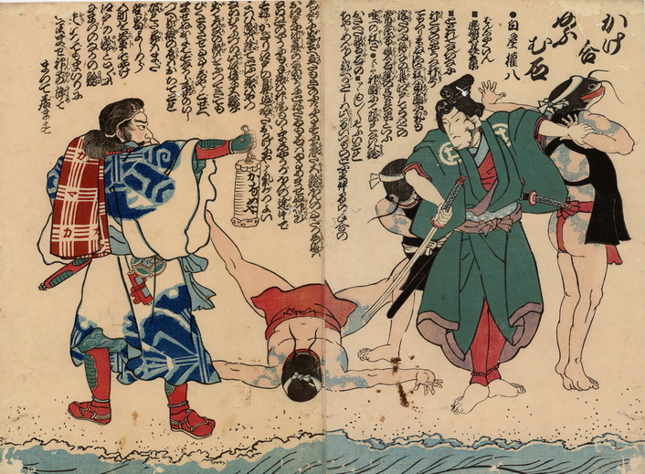

白屋権八に倒される3体の鯰。いずれも頭部以外は人間の体で、籠かきに扮しており、全身に青い刺青がある。
出典：親書誌：U426_nichibunken_0209：かけ合おうむ石；カケアイオウムイシ／日付：2010／資源識別子：U426_nichibunken_0209_0001_0000
Copyright (c)2010- International Research Center for Japanese Studies, Kyoto, Japan. All rights reserved.